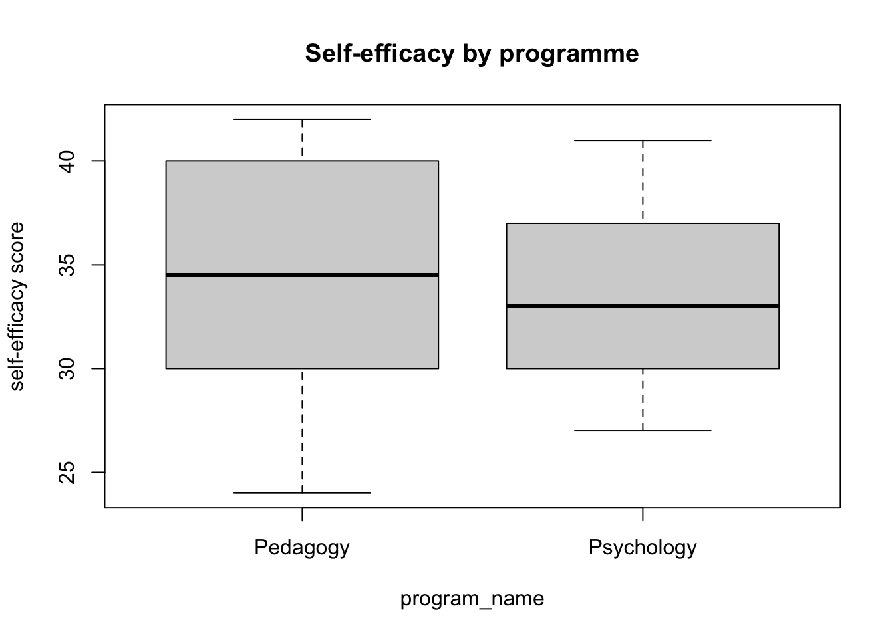
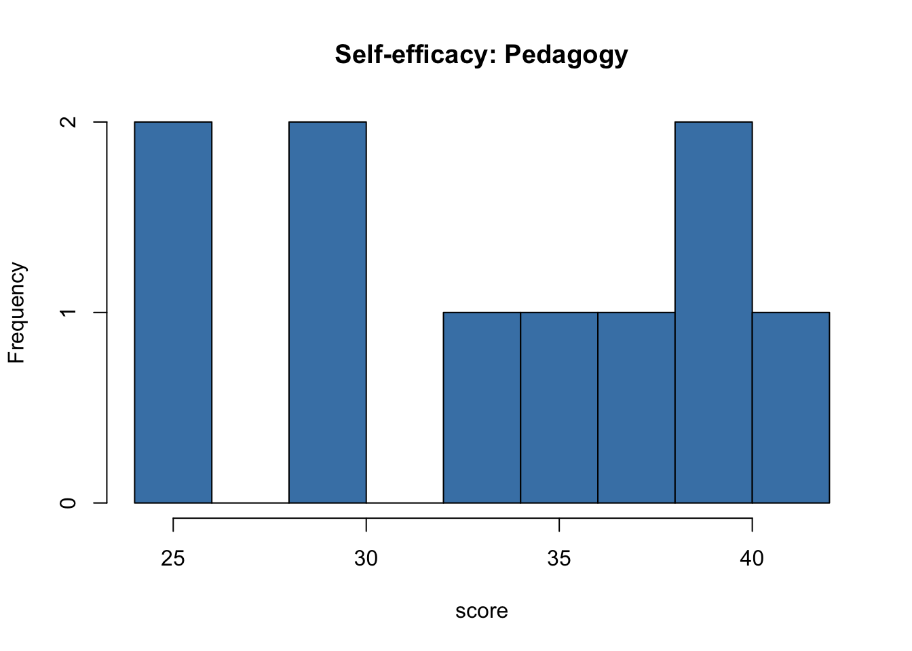
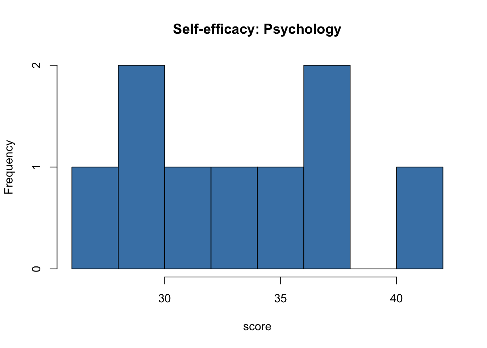
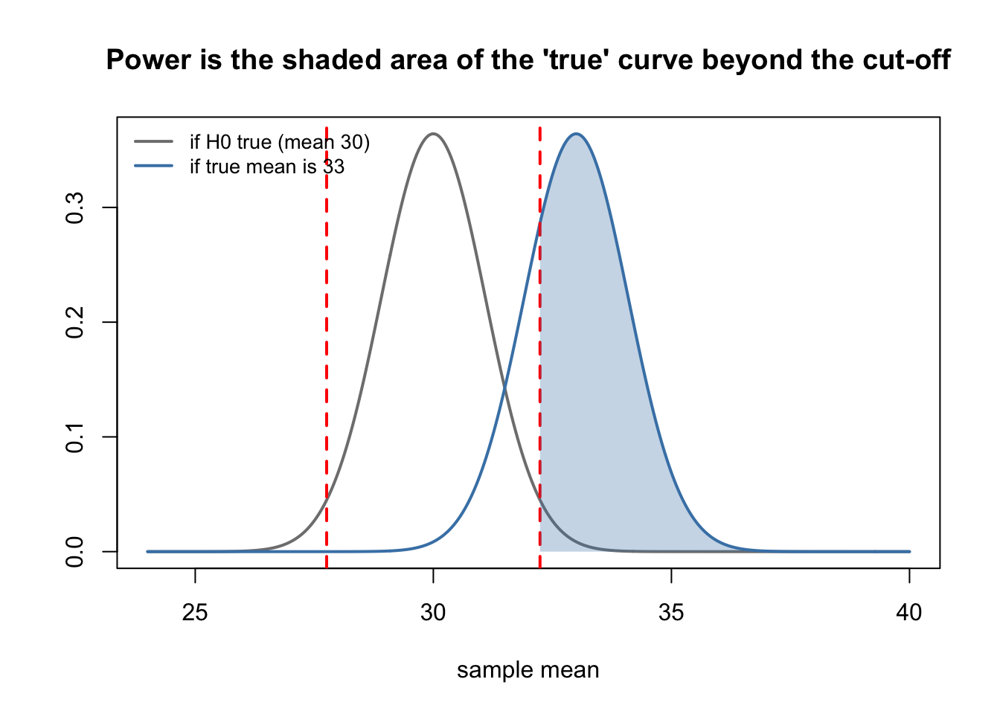
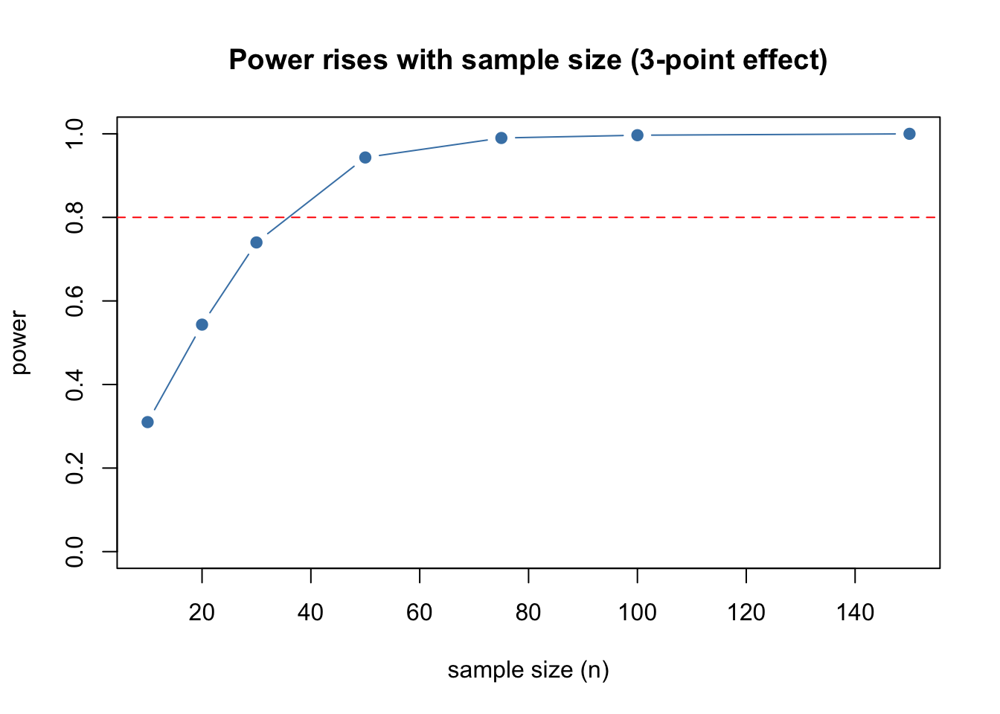
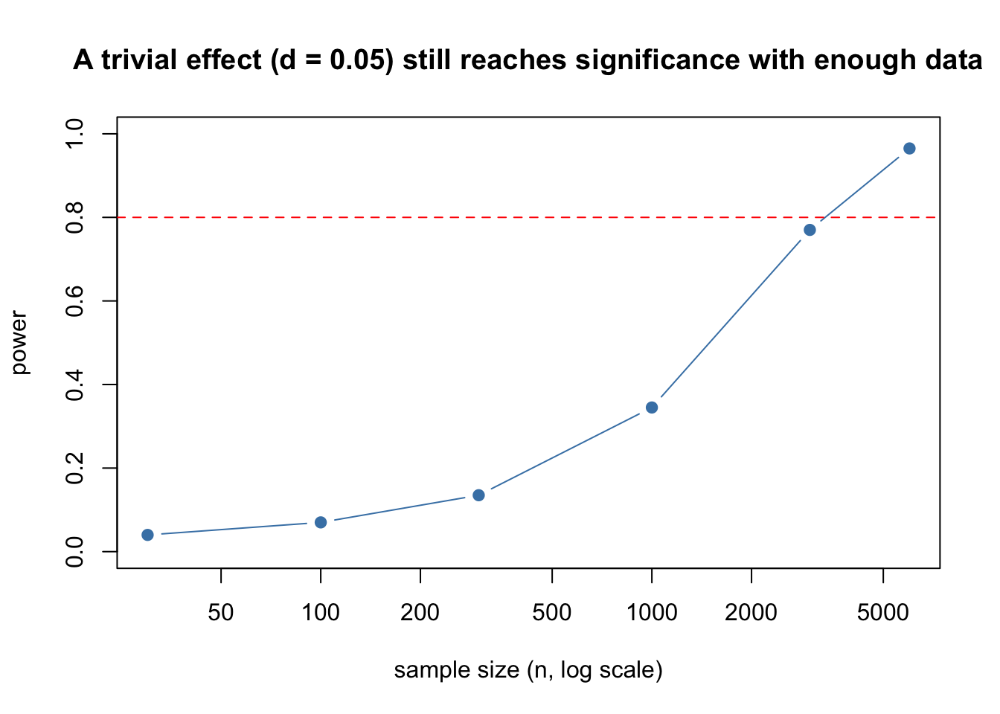

hist(survey$self_efficacy,
breaks = 10,
col = "steelblue",
main = "Self-efficacy in the sample",
xlab = "self-efficacy score")
Werkcollege 4
Welcome back! In Week 3 you learned to estimate a population mean: you computed a point estimate and a confidence interval, and you saw how the sampling distribution works.
This week we take one more step. Instead of asking “roughly what is the mean?”, we ask a yes/no question: “is the population mean equal to a specific value, or not?” Answering that question is called hypothesis testing, and the tool we use is the t-test.
Work through this page carefully, from top to bottom. Every short explanation is followed by a Your turn task to do yourself.
General tips:
In Week 3 you built a confidence interval: a range of plausible values for the population mean. That answered the question “what is the estimated mean?”
Sometimes, we have a different question. Suppose an article reports that, in some larger population, the average self-efficacy score is 30. We can now ask: does our class differ from that value? This is a yes/no question about a specific number, and it is exactly what a hypothesis test answers.
The specific number we test against (here, 30) is called mu (written \(\mu_0\)). It does not come from our own data; it comes from theory or earlier research (the article). Our job is to decide whether our observed data is consistent with that hypothesized value, or inconsistent.
We use a test that takes the wobble of the sample mean (the standard error from Week 3) into account.
Every testing (e.g., t-tests) in this tutorial follows the same five steps. Learn them once, and apply them to any test. For the t-test we do the following:
We first walk these five steps for a one-sample t-test (comparing our mean to a known value). Then we repeat them for a two-sample t-test (comparing two group means). Finally, we explore power and effect size.
A hypothesis test always has two hypotheses.
Because \(H_1\) uses “different” (\(\neq\)), and allows a difference in either direction (higher or lower), this is a two-sided test. Two-sided is our default, because usually we do not know in advance which way the difference will go.
Sometimes you have a clear direction in mind before you see the data. For example, “our students score higher than 30.” Then you can use a one-sided test, with \(H_1: \mu > 30\) (or \(H_1: \mu < 30\) for “lower”).
A one-sided test puts all of the 5% in one tail, which makes it a little easier to reach significance in that direction, but it means you cannot detect a difference in the other direction at all. In R you choose this with alternative = "greater" or alternative = "less" inside t.test(). In this course, use two-sided unless you have a strong, pre-registered reason to expect one direction.
Pick a continuous variable and find a value for \(\mu_0\). Write down your \(H_0\) and \(H_1\) in the two-sided form (\(=\) and \(\neq\)). In one sentence, explain why you chose that value for \(\mu_0\), and why you test two-sided.
A one-sample t-test is only valid if a few assumptions hold:
We check the shape with a histogram (from Week 2):
hist(survey$self_efficacy,
breaks = 10,
col = "steelblue",
main = "Self-efficacy in the sample",
xlab = "self-efficacy score")
We look for a roughly symmetric, single-peaked shape. It does not have to be perfect, strong skew would be a warning sign.
Make a histogram of your variable. Describe its shape in one or two sentences (symmetric or skewed? one peak or more? any outliers?). Argue whether the normality assumption is reasonable.
The test statistic for a t-test is the t-value. It measures how far our sample mean sits from \(\mu_0\), expressed in standard errors (the same standard error you met in Week 3):
\[t = \frac{\text{mean} - \mu_0}{\text{standard error}}, \qquad \text{standard error} = \frac{sd}{\sqrt{n}}\]
A t-value near 0 means the sample mean is close to \(\mu_0\). A large t-value (far from 0, positive or negative) means the sample mean is far from \(\mu_0\).
We compute it step by step in R, as a calculator:
mu0 <- 30 # the value from the literature
m <- mean(survey$self_efficacy) # sample mean
s <- sd(survey$self_efficacy) # standard deviation
n <- nrow(survey) # number of people
se <- s / sqrt(n) # standard error
t_value <- (m - mu0) / se
t_value
#> [1] 2.93013Compute the t-value by hand (in R, as a calculator) for your own variable and your own \(\mu_0\), following the four lines above: the mean, the standard deviation, the standard error, and finally the t-value.
The p-value answers: if the null hypothesis were true, how surprising would our t-value be? A small p-value (close to 0) means “this observed result would be very surprising if \(H_0\) were true”, which is treated as evidence against \(H_0\). The usual yet arbitrary cut-off is 0.05.
The t-value follows a t-distribution with n - 1 degrees of freedom (df). For a two-sided test, we look at both tails, so we take the area beyond \(+|t|\) and beyond \(-|t|\):
df <- n - 1
p_value <- 2 * pt(-abs(t_value), df = df) # two-sided p-value
p_value
#> [1] 0.006541451The function pt() gives the area under the t-distribution up to a value. Using -abs(t_value) takes the lower tail, and multiplying by 2 covers both sides.
On paper, you do not have pt(). Instead you look up your df and your \(|t|\) in a distribution table (in the book). The table gives a one-sided area; for a two-sided test you double it. Always check whether your table is one-sided or two-sided before you read off the p-value.
Compute the two-sided p-value for your variable with pt(), using your own t_value and df. Is it smaller or larger than 0.05?
You did the work by hand. Now let R do the whole test in one line and check your answer. The command is t.test(). We give it the variable and the value \(\mu_0\) under mu:
t.test(survey$self_efficacy, mu = 30) # default is alternative = "two.sided"
#>
#> One Sample t-test
#>
#> data: survey$self_efficacy
#> t = 2.9301, df = 29, p-value = 0.006541
#> alternative hypothesis: true mean is not equal to 30
#> 95 percent confidence interval:
#> 30.97647 35.49020
#> sample estimates:
#> mean of x
#> 33.23333Read the output: it prints the t value, the df, and the p-value. These should match your hand calculation from Steps 3 and 4. It also prints a 95% confidence interval for the mean, exactly like Week 3.
Look at the 95% confidence interval in the output. A two-sided test at the 0.05 level rejects \(H_0\) when \(\mu_0\) (here 30) falls outside that interval, and fails to reject when \(\mu_0\) falls inside it. So the Week 3 confidence interval already contained the answer to this test.
Interpretation. We compare the p-value to 0.05:
Run t.test() for your variable with your \(\mu_0\). Confirm that the t and p match your hand values. Then write one sentence stating your conclusion about \(H_0\) in plain language.
A p-value tells you whether there is a difference, but not how big it is. With a large enough sample, even a tiny, unimportant difference can become “significant”. So we also report an effect size, which measures the size of the difference on its own.
For a one-sample test, Cohen’s d is the distance between the mean and \(\mu_0\), measured in standard deviations:
\[d = \frac{\text{mean} - \mu_0}{sd}\]
cohens_d <- (m - mu0) / s
cohens_d
#> [1] 0.5349662Rough labels: \(d \approx 0.2\) is a small effect, 0.5 medium, 0.8 large.
Notice that d = t / sqrt(n). The t-value grows with the sample size, but Cohen’s d does not. That is the whole point: d describes the size of the effect itself, separately from how many people you measured. We return to this idea in the power section.
Compute Cohen’s d for your variable and \(\mu_0\). Give it a label (small, medium, or large), and write one sentence combining your Step 5 conclusion with this effect size.
Often we do not compare our mean to a fixed number, but compare two groups to each other. For example: do students in different study programmes report different self-efficacy? This is a two-sample t-test. It follows the same five steps.
For this example we compare two of the programmes in our data, Pedagogy and Psychology. We first keep only those two groups:
two_programs <- survey[survey$program_name %in% c("Pedagogy", "Psychology"), ]Before testing, always look at the groups. We split self-efficacy into the two programmes and compare them with a boxplot (from Week 2) and with numbers:
boxplot(self_efficacy ~ program_name,
data = two_programs,
main = "Self-efficacy by programme",
ylab = "self-efficacy score")
# the two groups as separate vectors
g1 <- two_programs$self_efficacy[two_programs$program_name == "Pedagogy"]
g2 <- two_programs$self_efficacy[two_programs$program_name == "Psychology"]
c(mean_pedagogy = mean(g1), sd_pedagogy = sd(g1), n_pedagogy = length(g1))
#> mean_pedagogy sd_pedagogy n_pedagogy
#> 33.900000 6.226288 10.000000
c(mean_psychology = mean(g2), sd_psychology = sd(g2), n_psychology = length(g2))
#> mean_psychology sd_psychology n_psychology
#> 33.555556 4.693376 9.000000Make the boxplot and the group summaries for your own two groups. Which group has the higher mean in the sample? Is the difference big or small compared to the spread within each group?
Now the hypotheses are about the difference between the two group means.
Again this is two-sided: we allow either group to be higher.
Write down \(H_0\) and \(H_1\) for your two groups, in the two-sided form. Explain in one sentence why you test two-sided.
The two-sample t-test needs the same assumptions as before, applied to both groups: a continuous variable, independent observations, and roughly normal distributions in each group (or large enough samples). Check each group’s shape with a histogram:
hist(g1, breaks = 8, col = "steelblue",
main = "Self-efficacy: Pedagogy", xlab = "score")
hist(g2, breaks = 8, col = "steelblue",
main = "Self-efficacy: Psychology", xlab = "score")
Make a histogram for each of your two groups. Describe both shapes and argue whether the assumption is reasonable.
For two groups, the t-value is the difference between the two means, divided by the standard error of that difference. Each group keeps its own spread: we do not assume the two groups are equally spread out. This version of the test is called Welch’s t-test, and it is the safer, standard choice.
\[t = \frac{\text{mean}_1 - \text{mean}_2}{\sqrt{\dfrac{s_1^2}{n_1} + \dfrac{s_2^2}{n_2}}}\]
In R, as a calculator:
m1 <- mean(g1); s1 <- sd(g1); n1 <- length(g1)
m2 <- mean(g2); s2 <- sd(g2); n2 <- length(g2)
# standard error of the difference (each group keeps its own spread)
se_diff <- sqrt(s1^2/n1 + s2^2/n2)
t_value2 <- (m1 - m2) / se_diff
t_value2
#> [1] 0.1369672The degrees of freedom for Welch’s test use a longer formula. You do not need to memorise it; R computes it for you, and we reproduce it here only so our hand p-value matches R exactly:
df2 <- (s1^2/n1 + s2^2/n2)^2 /
((s1^2/n1)^2 / (n1 - 1) + (s2^2/n2)^2 / (n2 - 1))
df2
#> [1] 16.53635Compute the two-sample t-value by hand for your two groups, following the lines above: the two means, the standard error of the difference, and the t-value.
First, the two-sided p-value by hand, using pt() with the Welch degrees of freedom:
p_value2 <- 2 * pt(-abs(t_value2), df = df2)
p_value2
#> [1] 0.8927105Now let R run the whole test and check your hand calculation. For two groups we use the formula form variable ~ group (as in the Week 2 boxplot). We do not set var.equal, so t.test() runs Welch’s test by default, matching the by-hand calculation above:
t.test(self_efficacy ~ program_name, data = two_programs)
#>
#> Welch Two Sample t-test
#>
#> data: self_efficacy by program_name
#> t = 0.13697, df = 16.536, p-value = 0.8927
#> alternative hypothesis: true difference in means between group Pedagogy and group Psychology is not equal to 0
#> 95 percent confidence interval:
#> -4.972666 5.661554
#> sample estimates:
#> mean in group Pedagogy mean in group Psychology
#> 33.90000 33.55556The t, df, and p-value should match your hand values. Read the p-value and decide:
Compute the two-sided p-value by hand, then run the two-sample t.test() for your groups. Confirm the t and p match, and write one sentence stating your conclusion about \(H_0\).
For two groups, Cohen’s d is the difference between the group means divided by a single standard deviation that combines both groups (the pooled standard deviation, sp). This pooling is only a way to put the difference on one common scale for the effect size; it is not an assumption of the Welch test above.
We subtract in the order (Psychology \(-\) Pedagogy), that is \(\text{mean}_2 - \text{mean}_1\), so that the sign matches what cohen.d() reports below:
\[d = \frac{\text{mean}_2 - \text{mean}_1}{s_p}, \qquad s_p = \sqrt{\frac{(n_1-1)\,s_1^2 + (n_2-1)\,s_2^2}{n_1 + n_2 - 2}}\]
sp <- sqrt(((n1 - 1) * s1^2 + (n2 - 1) * s2^2) / (n1 + n2 - 2))
cohens_d2 <- (m2 - m1) / sp
cohens_d2
#> [1] -0.06197456Use the same rough labels as before (0.2 small, 0.5 medium, 0.8 large). The sign of d only shows the direction (which group is higher); its size is what matters.
You can also let a package compute it. The psych package has a function cohen.d(). The block below installs psych the first time (only if it is missing) and then loads it:
if (!requireNamespace("psych", quietly = TRUE)) {
install.packages("psych", repos = "https://cloud.r-project.org")
}
library(psych)
d_data <- data.frame(
self_efficacy = two_programs$self_efficacy,
program_name = factor(two_programs$program_name)
)
cohen.d(d_data, group = "program_name")
#> Call: cohen.d(x = d_data, group = "program_name")
#> Cohen d statistic of difference between two means
#> lower effect upper
#> self_efficacy -0.97 -0.07 0.84
#>
#> Multivariate (Mahalanobis) distance between groups
#> [1] 0.066
#> r equivalent of difference between two means
#> self_efficacy
#> -0.03The value from cohen.d() should be very close to your hand value (small differences can appear because the package estimates the combined spread in a slightly different way).
t.test() and cohen.d() order the two groups in opposite ways, so the t-value and Cohen’s d may carry opposite signs. That is harmless: only the sizes matter for your conclusion. The sign simply tells you which group scored higher.
Compute Cohen’s d by hand for your two groups and label it. Then check it with cohen.d() from the psych package and confirm the two are close. Finally, write a short conclusion that combines the p-value and the effect size.
A test can give the wrong answer in two ways. Understanding these leads to the idea of power.
There are two kinds of mistake a test can make:
| \(H_0\) is really true | \(H_0\) is really false | |
|---|---|---|
| Test rejects \(H_0\) | Type I error (false alarm) | Correct |
| Test keeps \(H_0\) | Correct | Type II error (missed effect) |
Power goes up when the effect is bigger, when the sample is larger, or when the spread is smaller.
We can see power by simulation, using a prescribed function. It draws many samples from a population whose true mean we choose, runs a one-sample t-test on each, and reports the share of tests that are significant. You can run and read this; you do not need to write it yourself.
simulate_power <- function(mu0, true_mean, true_sd, n, n_sim = 1000, alpha = 0.05) {
set.seed(2026)
p_values <- replicate(n_sim, {
sample_data <- rnorm(n, mean = true_mean, sd = true_sd)
t.test(sample_data, mu = mu0)$p.value
})
mean(p_values < alpha) # share of tests that reject H0
}First, a check. If the true mean equals \(\mu_0\), then \(H_0\) is true, so every rejection is a false alarm. The share should land near \(\alpha = 0.05\) (the Type I error rate):
simulate_power(mu0 = 30, true_mean = 30, true_sd = 6, n = 30) # H0 true -> about 0.05
#> [1] 0.044Now make the true mean differ from \(\mu_0\). The share of significant tests is now the power:
simulate_power(mu0 = 30, true_mean = 33, true_sd = 6, n = 30) # a real 3-point effect
#> [1] 0.762Whatever is left over (1 minus this number) is the Type II error rate: the share of times we missed the real effect.
What power looks like. The picture below shows why this works. The grey curve is the sampling distribution of the mean if \(H_0\) were true (centred on 30). The blue curve is the sampling distribution if the true mean is really 33. The red dashed lines are the cut-offs: sample means outside them lead us to reject \(H_0\). Power is the share of the blue curve that falls beyond the cut-off (shaded):
mu0 <- 30
true_mean <- 33
true_sd <- 6
n <- 30
se <- true_sd / sqrt(n)
crit <- qt(0.975, df = n - 1) * se # half-width of the "keep H0" zone
upper_cut <- mu0 + crit
lower_cut <- mu0 - crit
xs <- seq(24, 40, length.out = 400)
plot(xs, dnorm(xs, mu0, se), type = "l", lwd = 2, col = "grey50",
xlab = "sample mean", ylab = "",
main = "Power is the shaded area of the 'true' curve beyond the cut-off")
lines(xs, dnorm(xs, true_mean, se), lwd = 2, col = "steelblue")
abline(v = c(lower_cut, upper_cut), col = "red", lwd = 2, lty = 2)
# shade the power region (blue curve beyond the upper cut-off)
xr <- seq(upper_cut, 40, length.out = 200)
polygon(c(xr, rev(xr)),
c(dnorm(xr, true_mean, se), rep(0, length(xr))),
col = adjustcolor("steelblue", alpha.f = 0.3), border = NA)
legend("topleft", bty = "n", cex = 0.85, lwd = 2,
col = c("grey50", "steelblue"),
legend = c("if H0 true (mean 30)", "if true mean is 33"))
If the two curves move further apart (a bigger effect) or get narrower (a bigger sample), more of the blue curve spills past the cut-off, so power goes up.
Keep mu0 = 30, true_mean = 33, true_sd = 6, and raise the sample size n from 30 to 100 in simulate_power(). Does the power go up or down? Write one sentence linking sample size to power.
We can watch that happen across many sample sizes at once. For each n we run the simulation and plot the resulting power:
sample_sizes <- c(10, 20, 30, 50, 75, 100, 150)
power_by_n <- sapply(sample_sizes, function(nn) {
simulate_power(mu0 = 30, true_mean = 33, true_sd = 6, n = nn, n_sim = 300)
})
plot(sample_sizes, power_by_n, type = "b", pch = 19, col = "steelblue",
ylim = c(0, 1),
xlab = "sample size (n)", ylab = "power",
main = "Power rises with sample size (3-point effect)")
abline(h = 0.80, col = "red", lty = 2) # a common target for power
The curve climbs as n grows, and the red line marks 0.80, a common target: many researchers aim for at least 80% power.
R also has a built-in function, power.t.test(), that computes power from the effect size, sample size, and spread directly, without simulation. Our simulation is slower but shows where power comes from, which is easier to understand.
Here is the most important lesson of the week. Because power rises with sample size, a very large sample can make any difference significant, even one far too small to matter in practice.
Take a tiny true difference: \(\mu_0 = 30\) versus a true mean of 30.3. In standard deviations that is Cohen’s d = 0.3 / 6 = 0.05, a trivially small effect. With a normal sample it is almost never detected:
simulate_power(mu0 = 30, true_mean = 30.3, true_sd = 6, n = 30) # tiny effect, small n
#> [1] 0.054But with a huge sample, the same trivial difference becomes significant almost every time:
simulate_power(mu0 = 30, true_mean = 30.3, true_sd = 6, n = 5000) # tiny effect, huge n
#> [1] 0.942We can plot this trivial effect across a wide range of sample sizes. Watch the power climb toward 1 even though the effect never changes:
big_sizes <- c(30, 100, 300, 1000, 3000, 6000)
power_tiny <- sapply(big_sizes, function(nn) {
simulate_power(mu0 = 30, true_mean = 30.3, true_sd = 6, n = nn, n_sim = 200)
})
plot(big_sizes, power_tiny, type = "b", pch = 19, col = "steelblue",
log = "x", ylim = c(0, 1),
xlab = "sample size (n, log scale)", ylab = "power",
main = "A trivial effect (d = 0.05) still reaches significance with enough data")
abline(h = 0.80, col = "red", lty = 2)
So a small p-value does not mean the effect is important. It can simply mean the sample was very large. This is the difference between:
This is exactly why we always report Cohen’s d next to the p-value. The p-value tells you whether there is an effect; the effect size tells you whether it matters.
Use simulate_power() twice: once with a small effect and a large n, and once with a large effect and a small n. Compare the two power values. Then write two sentences: one on why a significant result is not always an important result, and one on why reporting Cohen’s d helps.
Last week you estimated a population mean. This week you learned to test claims about it. You can now:
hist();(mean - mu0) / se;pt() (and look it up in a distribution table);t.test(x, mu = ...) and interpret the result;t.test(y ~ group);psych::cohen.d();A small cheat sheet to keep:
| You want to… | You write… |
|---|---|
| Sample mean / sd / n | mean(x), sd(x), length(x) |
| Standard error | sd(x) / sqrt(length(x)) |
| One-sample t by hand | (mean(x) - mu0) / se |
| Two-sided p-value | 2 * pt(-abs(t), df = n - 1) |
| One-sample t-test | t.test(x, mu = 30) |
| One-sided t-test | t.test(x, mu = 30, alternative = "greater") |
| Two-sample t-test (Welch) | t.test(y ~ group, data = d) |
| Cohen’s d (one sample) | (mean(x) - mu0) / sd(x) |
| Cohen’s d (two groups) | (m2 - m1) / sp |
| Cohen’s d in R | psych::cohen.d(d, group = "g") |
| Simulate many p-values | replicate(1000, t.test(rnorm(n, ...), mu = )$p.value) |
Well done. Keep your materials in the research_methods folder, we build directly on them next week.